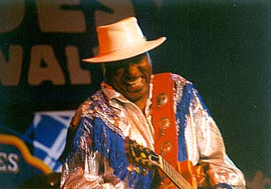
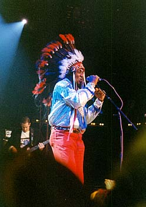
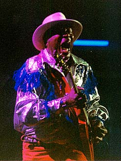

|
 |
|
| ЭК: Ну, для меня это как готовить (суп) "Сборную солянку" - для него требуется много ингредиентов, и все вместе скидывается в общую кастрюлю. Смешаешь - и получится отличный суп на обед. Это то же, что я делаю с музыкой. Так получается лучше. В ней всегда есть то, что близко именно вам. Там, как вы сказали, есть кантри, или рок-н-ролл - что услышишь… Или рокабилли. Раз нравится - значит окей. | Well. To me it's like makin' a gumbo soup. It takes a lot of different ingredients. And you put it all in one pot. You mix it up and you have very good soup to eat. Yeah! So that's what I do with music. It is good. It's has a place that you can relate. It's like you just said country. Or rock'n'roll blues, what have you. It's rockabilly. If it feels good then it's ok. |
| АЕ: Вы считаете Чака Бэрри рок-н-ролльным
исполнителем, или блюзовым? ЭЧК: Блюзовым исполнителем! Да. Эту музыку называют рок-н-роллом, но в основе он играл блюз... В темпе. Это все блюз, да. |
AE: You think Chuck Berry is a rock'n'roll artist or a blues
artist? E"C"C: Blues artist. Yeah. They call this music rock'n'roll, but basically he was playing blues. With a tempo. It's always blues, yeah… |
| Откуда псевдоним Клиаватер? Джентльмен, который был моим концертным агентом, по имени Джамп Джексон, он дал мне имя Клиаватер. Я сказал: Окей. Так оно ко мне и пристало. Больше ничего. Мы с Мадди Уотерсом - не родственники. Но я был знаком с ним многие годы. Чудесный (человек). Мы всегда хорошо ладили. До его смерти мы жили в одном городе. Мы жили в трех минутах друг от друга. Мы всегда чудесно ладили. И я называл его своим героем многие годы. Он мой герой - Мадди. |
A gentleman, who used to be my booking' agent named Jump
Jackson. He gave me the name Clearwater. He said, he'll give me the name
Clearwater, He said I wanna call you Clearwater, I said ok. So I got stuck
with it. Nothing else, we are not related, Muddy and I, we are not related. I've knew him for many years. But we are not related. Wonderful! We always got along altogether. And until he passed away we lived in a same town. We lived like three minutes apart. We always got along really wonderful. And I'll place him as my hero for many years. He is my hero - Muddy |
| АЕ: Чикагские блюзовые клубы
знамениты на весь мир. Почему, как Вы
думаете? ЭВК: Я думаю, потому что это - от сердца. Я еще многие годы назад предсказывал, что (популярность блюза) еще поднимется на поверхность, и будет иметь место, и будет расти и расти, и становиться все больше и больше. И действительно, теперь все становится по-настоящему лучше и лучше. И я весьма польщен, что и сам - часть этого процесса. Мне просто повезло, что я был рядом с такими людьми, как Джимми Рид, Хаулин Вулф, Мадди Уотерс, Элмор Джеймс - в их лучшие годы - и с Фредди Кингом, а потом - Мэджиком Сэмом, Отисом Рашем и т.д. |
AE: Chicago clubs are famous all over the world, why do you
think so
E"C"C: I think because it's heartfelt. I predicted this many years ago that it would surface, and be around, and escalate, and get to be bigger and bigger, and sure enough it is really starting to do better. I feel very honored to be part of it, because people like Jimmy Reed, Howlin' Wolf, Muddy Waters, Elmore James - I was fortunate enough to be around all this people in their heyday, and Freddie King, and then Magic Sam, Otis Rush, people like that. |
| АЕ: Вы были свидетелем больших
изменений в блюзе… ЭВК: О, да. Современный блюз (сильно изменился). Вы знаете, у молодых людей свои идеи, понимаете. И, может быть, в ближайшие годы блюз будут принимать гораздо лучше. Было время, когда Мадди и все другие известные люди начинали, тогда публика только дивилась и говорила: "Ну, я не знаю, что это за музыка". Но тогда им нужно было верить в себя. И я рад, что они верили. Потому что это они дали мне что-то, от чего я мог пойти дальше. |
AE: You've seen many changes in blues? E"C"C: Oh yeah, Contemporary… A lot of contemporary blues, you know, the young people have different ideas, you know, and maybe in years to come it will become much more accepted. There was a time when Muddy and all those people started out, and people would frown and say wow, I'm not sure about this music. But then they have to believe in them. And I glad they did. Because that gave me something to go on. |
| О, да. Всегда так было:: техасский
блюз, потом чикагский блюз, блюз в
калифорнийском стиле… Потом Дельта-блюз,
который стал чикагским блюзом, большей
частью - из Дельты. Да. Различия слышны. Слышно, что калифорнийский более гладок в аранжировках - есть разница. |
oh yeah, it was always like this. Texas blues, then Chicago
blues, California style blues. Then the Delta blues, which became the
Chicago blues - more from the Delta. Oh year, you can hear the differences. You can hear that California style it's more polished in the arrangements... There a difference |
  |
|
| Чикагский стиль я бы определил его… Я скажу, что там более мясистый звук, с динамичный ритмом, как в шаффле, бэкбит (скрытый ритм).Да, вот это Чикаго. И много гитары. | Chicago style. I would define it I say… Chicago is a more of as gutsy sound, with a dynamite shuffle kind of bit, back bit and stuff… Yeah… that's Chicago. With lot's of guitar. |
| ЭЧК Я думаю, что отклик (на блюз в разных странах) в основном, одинаков. Я нахожу его довольно постоянным по всему миру. Я был в Японии - и там тот же отклик. Я был в Гонконге дважды - тот же отклик, как в Турции. Я был в Южной Америке в прошлом году: Уругвай, Бразилия - тот же примерно отклик. Это мой первый приезд в Россию, но я уже чувствую вокруг всего этого добрую вибрацию, и я предсказываю, что будет примерно то же. И я очень взволнован, я всегда хотел приехать в Россию, чтобы сыграть блюз. И я благодарен за возможность сделать это. | I think the response is pretty basic. I found it to be pretty basic all over the world. Like I've been to Japan and it's same kind of response. I been to Hong Kong twice - same kind of response, like in Turkey. I was in South America last year - Urugway & Brazil - same kind of response. And this is my first time coming to Russia, so I can feel a good vibe about it already, so I predict it's pretty much the same. And I'm really exited, I always wanted to come to Russia and play the blues. And I'm thankful for the opportunity to do that. |
Бывшие новости |
Январь-Февраль 1999 |
Март 1999 |
Ноябрь-Декабрь 1999
Январь 2000 |
Февраль 2000 |
Март 2000 |
Апрель 2000